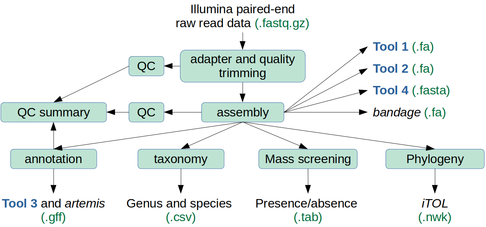

Welcome to the User Manual for the Genomics Core
The Core is part of a suite of genome analysis tools that explore bacterial genomes. The suite includes:
| Application | Description |
|---|---|
| The Core | Genome assembly, taxonomic classification, phylogeny, annotation and mass screening. |
| Tool 1 | Mass screening with curated databases. |
| Tool 2 | Mass screening with genes you choose. |
| Tool 3 | Comparison of genomes, and phylogeny. |
| Tool 4 | Primer design: identification of unique stretches of DNA. |
They are built with the pipeline manager Nextflow, and operate within Singularity containers.
The suite was developed as part of a collaborative project between Volac International Ltd. and Cardiff University, partly funded by Innovate UK as part of a knowledge transfer partnership (KTP).
What is the Core for?
The Core processes raw paired-end sequence data in order to:
- assembly genomes (with pre- and post-quality control analysis),
- conduct mass screening using curated libraries of genes. e.g. resfinder,
- annotate the assembled genomes,
- determine the taxonomic classification for each isolate, e.g. Lactobacillus plantarum,
- draw a phylogenomic tree based on 172 common genes, and
- reports any anomalous outcomes.
Additionally, the Core provides inputs for downstream analysis by the Tools and also for external appliances.

What does the Core do?
The main components of appliance_GBA are:
- quality and adapter trimming of raw read data by trim_galore (a wrapper for cutadapt and FastQC). FastQC runs after trimming is complete and generates a report for each sample,
- identification of potential contamination by kraken2,
- genomes are assembled by shovill,
- QC is conducted on the assembled genomes using quast,
- the assembled genomes are annotated by prokka,
- mass screening of the assembled genomes for genes of interest or hazard by ABRicate,
- MultiQC combines the QC and annotation reports into a single summary,
- classification of the isolates to species level by kraken2 and fastANI. The results are combined into a single table via awk commands, and
- LS-BSR and FastTree generate a phylogenomic tree based on 172 pre-define genes (see Zheng et al. 2015, figure 1).